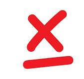
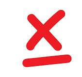

CMS
Un gestor de contenido o CMS es una herramienta que permite crear, editar, organizar y publicar contenido en linea de manera facil y eficinete, sin necesidad de modificar códigos complejos.
Un gestor de contenido o CMS es una herramienta que permite crear, editar, organizar y publicar contenido en linea de manera facil y eficinete, sin necesidad de modificar códigos complejos.


 

¡Gracias por jugar!